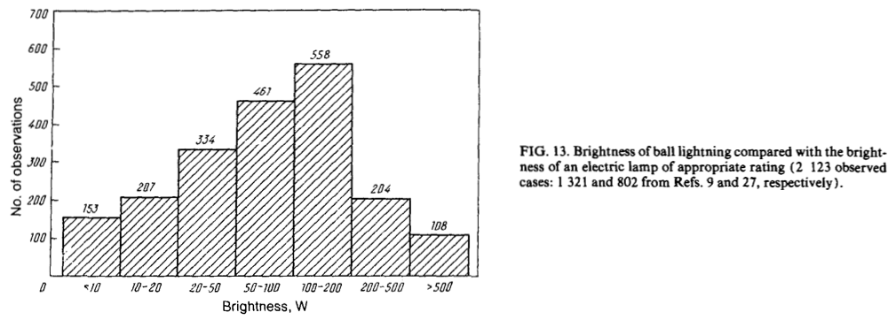

球状闪电：千百年的“幽灵”
已经在媒体发表，请勿转载。
雷电交加的雨夜，一个球状的幽灵的在半空飘荡，它开始漫无目的随机游走，后来似乎对附近的人产生了兴趣。十几秒过去之后，这个闪着橙色光芒的幽灵便消失不见了。
早在 1596 年，就曾经有一起出现在英格兰萨默塞特郡的韦尔斯的一起球状闪电事件的记录。1 几百年来，虽然有着众多的球状闪电目击记录，人们却一直没有揭开这个幽灵的面纱。

（图片来源：Ball Lightning from Wikimedia Commons）
在更早的北宋时期，沈括在《梦溪笔谈》中记载了一次非常类似球状闪电的过程：雷火从窗子里面穿过来，暴雷过后，木制物品并无损坏，但是银饰却融化了。2
目击记录
在一篇上世纪六十年代的文章中，提到了 Brand 收集处理的关于球状闪电的报告，Brand 相信他所统计调查的 600 项事件中，只有 215 项还算是可信。另外，文章还提到了对美国橡树岭国家实验室的一项比较初级的问卷调查，1962 个被调查的人中，有 110 个人说自己看到过球状闪电，比例高达 5.6%。虽然后来对所有的 Union Carbide Nuclear Company 的所有人员的调查中，只有 3.1% 的人说见过球状闪电，但是这依然可以说明，球状闪电的目击者并不稀有。3也就是说，球状闪电在某些时间段某些地区，算不上是一个非常罕见的现象。
大家对球状闪电的描述，从运动到形态，甚至消失的方式常常有很大的差异。Smirnov 在一篇论文中，根据当时大家收集的观测数据总结了球状闪电的一些特征。
亮度：大约一盏 100W 的灯。

颜色：黄色，橙色，红色（粉色）和白色居多。
消失的方式：多数是以爆炸的形式消失的。
直径：主要在 10cm 到 50cm 之间。
寿命：大多小于 50 秒。
出现的地方：多数在导体附近。
出现的季节：多出现在七月。（季节和时间的统计结果还受到样本的气候和人群的作息的影响。）
出现在一天中的时段：9 点到 18 点之间。（季节和时间的统计结果还受到样本的气候和人群的作息的影响。）

（后两项比较容易理解，统计的样本大多是北半球（人类大多聚集在北半球，俄罗斯对于球状闪电的关注和研究又较多），晚上大家都睡觉了，出现了也不太容易被人发现。）
理论研究
关于球状闪电的理论有很多，其中有一个理论是 cloud-to-ground 闪电击中土壤，发生化学反应，使得土壤中的硅元素被释放出来，并在空气中形成一个漂浮着 Si，SiO，SiC 的纳米颗粒的区域，这些颗粒以化学能的形式储存了之前闪电的部分能量。之后这些颗粒逐渐氧化，把储存的闪电能量释放出来，便形成了一个发光发热的球状闪电。4这样可以解释大多数的球状闪电的特性，包括寿命，亮度，产生的地点。
当然因为缺乏直接详细的测量，各种理论层出不穷。比如 Muldrew 有个分层模型5，
（Muldrew 分层的模型）
这个模型中，球状闪电是由一个固态的核外加电子层和等离子层组成的。这个球体之所以不会立刻坍缩是因为核心和电子组成的薄层之间有特殊的电磁场形成了一层势垒。当电子慢慢穿过电磁场势垒或者核心慢慢破坏之后，球状闪电就慢慢消失了。
有些模型中甚至使用了黑洞6。
总之，各种各样的模型很多，可是这事儿不能就单凭一些目击者数据来定论吧。
观测
有很多想要拍摄球状闪电的科学项目，但是这些项目到目前大都还没有拍到7。不过在 2012 年，来自兰州西北师范大学的岑建勇，袁萍，薛思敏在一次常规闪电观测（青藏高原？原文 Qinghai Plateau，不知如何翻译）中拍到了球状闪电的高速录像和光谱。
2012 年 7 月 23 日 21:54:59，他们是在进行 cloud-to-ground 闪电观测的时候，球状闪电突然出现。他们的仪器拍下了整个过程，包括视频，声音和 82 张图像。整个球状闪电发光的时间是 1.64 秒。下面是他们拍到的影像和光谱：
球状闪电产生的时候的光谱可以在下面图片中看到。上图是拍到的第一张图片，中间的图是第二张。可以明显的看到球状闪电的 光谱和常规的 cloud-to-ground 闪电是不同的。
（图片来源:Observation of the Optical and Spectral Characteristics of Ball Lightning8）
他们经过分析，发现 Si I, Fe I, 和 Ca I 的谱线在整个球状闪电过程中都存在。其中，Si I 的谱线甚至一直到最后的阶段也有。另外 N I 和 O I 近红外谱线先后出现，并且在球状闪电的亮度达到最大的时候强度达到最大，之后便逐渐减弱并且以与出现的顺序相反的次序消失。9
总之，球状闪电中含有 Si，Fe，Ca 等元素，这些元素正好是土壤中所大量含有的10。因此这个观测在一定程度上支持某些类型的球状闪电跟土壤有关的理论，但是需要更多的观测和实验验证。
应用
龟！派！气！功！
参考
- Ball Lightning on Wikipedia ↩
- 「内侍李舜举家曾为暴雷所震。其堂之西室，雷火自窗间出，赫然出檐，人以为堂屋已焚，皆出避之。及雷止，其舍宛然，墙壁窗纸皆黔。有一木格，其中杂贮诸器，其漆器银饫者，银悉槠流在地，漆器曾不焦灼。有一宝刀，极坚钢，就刀室中槠为汁，而室亦俨然。人必谓火当先焚草木，然后流金石，今乃金石皆铄，而草木无一毁者，非人情所测也。佛书言“龙火得水而炽，人火得水而灾”，此理信然。人但知人境中事耳，人境之外，事有何限？欲以区区世智情识，穷测至理，不其难哉！」 ↩
- J. R. McNally. (1960). Preliminary Report on Ball Lightning. Proceedings of the Second Annual Meeting of the Division of Plasma Physics of the American Physical Society, Gatlinburg, No. 2AD5 [1960], Paper J-15, pp. 1AD25 ↩
- John Abrahamson and James Dinniss. (2000). Ball lightning caused by oxidation of nanoparticle networks from normal lightning strikes on soil. Nature 403, 519-521. doi:10.1038/35000525 . ↩
- D. B. Muldrew. (2010). Solid charged-core model of ball lightning. Ann. Geophys., 28, 223-232. doi:10.5194/angeo-28-223-2010 . ↩
- Mario Rabinowitz. (1999). Little Black Holes: Dark Matter and Ball Lightning. Astrophys.Space Sci. 262, 391-410. doi:10.1023/A:1001865715833 . arXiv:astro-ph/0212251 . ↩
- 我没有找到官方的项目网站，这个结论是从这里看到的。 ↩
- Jianyong Cen, Ping Yuan, and Simin Xue. (2014). Observation of the Optical and Spectral Characteristics of Ball Lightning. Phys. Rev. Lett. 112, 035001. doi:10.1103/PhysRevLett.112.035001 . ↩
- I 表示离子的价态。 ↩
- 地球的地壳元素丰度列表 ↩

{kind=link}
前阵子巴西还是哪儿不是又给劈了, 死了好些人哩
看来做武器还是有点潜力哈。怪不得发现好多论文都是前苏联的，莫非他们就曾经想造武器？
那个翻译为“青海高原”。就这么简单
多谢多谢。